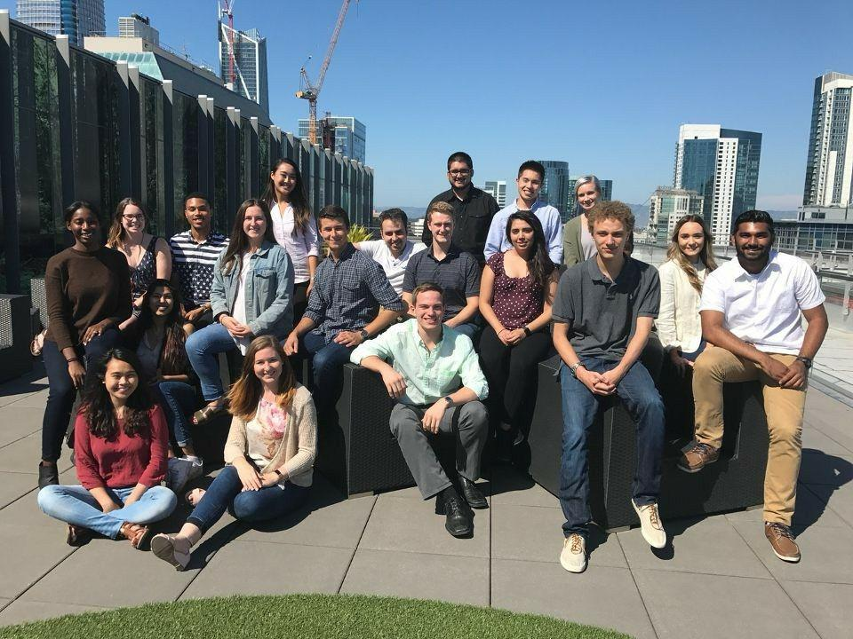
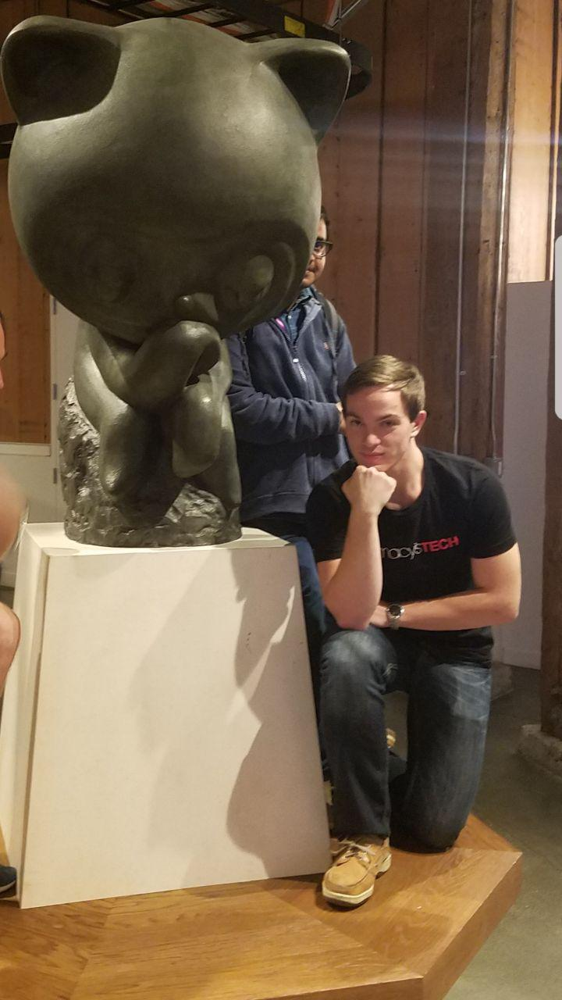
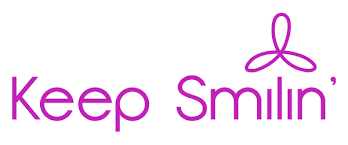
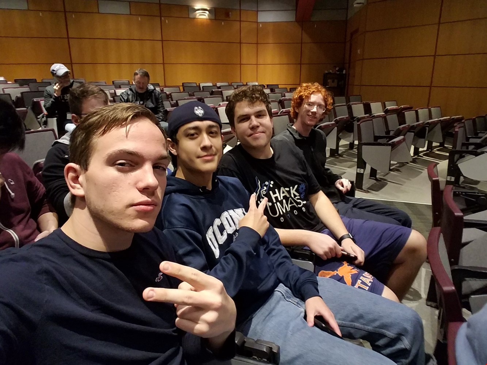

Projects
-
All Macy's Technology interns on the 15th floor rooftop in San Francisco.
 Digital Browse Media WallJune 21, 2017 - August 16, 2017
Digital Browse Media WallJune 21, 2017 - August 16, 2017
Contributors: Annabelle Bench, Vanessa Cruz, Taylar Gomez, Sarah Gorring, Tarek Hatata, Isiah Manns, Josh Singh, Carmen Tin, and Quinn Vissak- Wall mountable screen which bridges the gap in the omnichannel experience. The wall allows multiple users at a time to check in-store/online inventory, online reviews, product information, compare products and call an associate to unlock expensive items on display.
- Responsible for ideation and front end implementation.
- Stack: JSX, React.js, CSS, Java, mySQL, GCE, Macy's XAPI, and Node.js.
-
Posing at the GitHub HQ on GitHub Field Day.
 Personal Website 1.0July 9, 2017 - August 3, 2017
Personal Website 1.0July 9, 2017 - August 3, 2017
Contributors: Quinn Vissak- Initially created to write proper step by step documentation for beginners on how to create one's own website, including configuration and server hosting. Intended use at UConn ACM tech tutorial meetings starting in Fall 2017; requested tutorial by members. As President, I took it upon myself to honor their requests.
- Developed in spare time while working full time at Macy's Technology and part time at Artis Energy in Summer of 2017.
- Built using only HTML, JavaScript and CSS. Locally hosted on Apache Server but live as a result of GitHub Pages. My first attempt at web development.
- Learned React.js library and utilized Google API's for front end development while at Macy's Technology (simaltaneously during the development of this site). Hence, version 2 is being built currently with React.js to componentize elements.
-

Hack UConn - "Allergy Aid 911"March 2017
Contributors: Gabriele Cattoni and Quinn Vissak- Android application designed to increase the amount of time someone has prior to emergency response before going into full anaphylactic shock. Also increases bystander awareness about allergens and reaction symptoms to over 90% of the most common food related allergies.
- Please request to see proof of concept and fully functional application, as development is ongoing.
- Conducted extensive market research and analytics. Received endorsement by Keep Smilin 4 Abbie Foundation.
- Stack: XML, Java, and Android Studio.
- Finalist in Connecticut's Innovation Quest Competition of Entrepreneurship.
-
 Student Admin RedesignSeptember 2016 - November 2016
Student Admin RedesignSeptember 2016 - November 2016
Contributors: Ryan Blau, Luke Malinowski, Jonathan McGowan, Renoj Varghese, and Quinn Vissak- Software Engineering CSE 2102 semester project.
- Redesign of the current UConn student and professional administration system with a focus on better functional requirements, more simplistic user interfaces, more portability, a complex database architecture, better security features, sanitation of inputs, and more comprehensive dynamic class search algorithms.
- Stack: HTML, JS, CSS, Java and Linux MySQL Tomcat Web-server.
- Responsible for design, creation and implementation of database.
-
Delirious, sleep deprived and unhygenic team at UMass.
Hack UMass - "Happenin"October 2016
Contributors: Kyle Fujio, Sam Markelon, Dalton Minor, and Quinn Vissak- Meet up web-application designed to bring people together based on geolocation by common interest or activities happenin right now.
- Stack: HTML, JS, CSS, Node.js, Google Maps API, Python and mySQL.
- 48 Hour Hackathon at the University of Massachusetts.